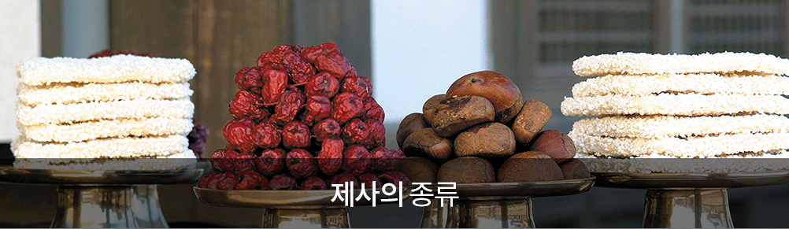

- >
- 홍보채널
- >
- 장례정보
장례정보

사시제(四時祭) :
- 사시제는 보통 시제(時祭)라고 부르는 것으로 사계절의 가운데 달(음력 2, 5, 8, 11월)에 고조부모 이하의 조상을 함께 제사하던 합동 제사이다.
- 시제는 정재(正祭)라고 불리는 것으로서 제사의 으뜸이며 표상이었다.
- 또 그것은 일종의 축제와도 같은것으로서 이날은 제사를 마친 후에 친지와 이웃을 초청하여 술과 음식을 대접하는 잔치를 벌이기도 했다.
- 그러나 조선시대부터 기제가 중시되면서 시제에 대한 인식은 점차 퇴색되어 간 듯하다.
선조제사 :
- "가례"의 선조에 대한 제사는 초조(初祖)와 그 이후 5대조까지 여러 선조에 대한 제사로 나뉜다.
- 전자는 시조의 직계 종손만이 행하는 것으로 매년 동지에 거행하고 후자에 대한 제사는 역시 그 선조의 직계 종손만이 제사하는 것으로 매년 입춘에 거행한다. 시조는 가문과 종속을 있게 한 시조이며 동지는 음기 가운데 양기가 처음으로 생겨나는 때이므로 이때 초조를 제사한다. 입춘은 만물이 소생하는 시작이므로 그 형상이 선조와 같다 하여 이 날 제사를 드리는 것이다. 절차는 대체로 사시제와 흡사하게 진행된다. 그러나 시조의 직계 종손 외에는 이러한 제사를 드릴 의무가 없고 또한 현대에 이러한 계절 제사를 모두 시행하기는 어렵다.
부모제사(이제) :
- 부모를 우한 정기 계절 제사는 매년 9월에 거행된다. 9월에 행하는 것은 이때가 만물이 이루어지는 계절이기 때문이다.
- 그 대부분 진행절차는 역시 시제와 같고 축문의 문구만 조금 다르다. 부모의 제사를 특별히 따로 둔 것은 그 친분이 다른 조상에 비할 바가 아니기 때문이다. 그러나 이 역시 오늘날 따로 날을 잡아 행하기가 용이하지 않고 부모의 기일을 그냥 넘기기도 어렵기 때문에 이를 기일에 행하는 것이 편할 것 같다.
기일제사(忌日祭祀) :
- 기일 제사는 조상이 돌아가신 날에 올리는 제사이다.
- 우리나라에서는 전통적으로 기제사가 중시되어 모든 제사에 우선되었고 제수도 가장 풍성하게 차렸다가 친지나 이웃과 나누어 먹는 떠들썩한 행사가 있었다. 기일제사에는 다른 제사와 달리 돌아가신 당사자만을 제사하는 것이었으므로 신주나 지방도 당사자의 것만 모시고 제수도 단설로 하여 행하게 되어 있다. 그러나 우리나라에서는 대부분의 가문에서 제사 당사자와 그의 배우자를 합설하여 행하는 것이 관행으로 되어왔다. 이는 인정으로 보아 당사자 한 분만을 향사하기가 미안하다는 뜻에서 비롯된 것으로 알려지고 있으며 또한 부모를 함께 제사하는 시제나 이제가 잘 시행되지 않았던 까닭에서 비롯된 풍습으로 생겨났다. 기일에는 특별히 근신하는 도리와 처신이 강조되었다.
- 이 날은 술을 마시지 않으며 고기를 먹지 않고 음악을 듣지 않으며 검정 두루마기, 흰옷, 흰 띠를 착용하고 저녁에는 안방에 들지않고 사랑채에서 잔다.
묘제(墓祭) :
- 묘제는 우리나라에서는 주로 음력 10월에 많이 행하였다.
- 우리나라에서는 흔히 묘제를 시제라고 청하며 음력 10월에 기제사를 지내지 않는 그 위 대의 조상, 즉 5대조 이상의 조상에 대한 제사를 1년에 한 번 지내는 것이 관행이 되었다. 원래 시제와 묘제는 전혀 다른 제사였다. 묘제는 그 조상의 묘소에서 지내는 것이 원칙이다. 산소를 잃어 버리거나 산소에 갈 수 없을때는 연고지에 제단을 설치하여 제사를 지내기도 한다. 시제에는 직계 자손, 방계자손을 포함하여 누구라도 참석할 수 있다. 묘제는 그 제사의 장소가 산소이므로 그 진행차례도 집 안에서 지내는 제사와는 다르고 또 산신에 대한 제사가 따로 있었다. 묘제가 끝난 후에도 우리 전통 풍습에는 제사음식 나누기 곧 준의 풍습이 있었다.
차례 :
- 설, 추석등에 지내는 차례는 오늘날 제사의 상징처럼 중요하게 인식되지만. 예전에는 속절 제사라고 불리던 것으로 예법에 있는 제사가 아니다. 따라서 어떠한 예서에도 이 명절의 차례에 대한 전례가 수록되어 있지 않다. 명절의 차례는 산(生)사람들만 즐겁게 지내기 미안하여 마련한 약식 제사라고 할 수 있다. 차례는 시제에서와 같이 제사의 대수 안에 있는 조상들을 한자리에서 함께 지낸다. 예를 들어 고조까지 4대 봉사하는 가정에는 고조부모 이하의 조상들을 함께 제사하는 것이다. 예전에는 설날에는 집에서, 한식과 추석에는 묘소에서 차례를 지내는 것이 보통이었으나 지금은 모두 집에서 지내는 것이 관례화되었다. 차례의 제사는 일종의 약식 제사로서 그 절차가 매우 간소하였다. 술은 한번만 올리고 축문도 사용하지 않는다. 또 떡국이나 면, 떡등 그 계절에 먹는 음식을 올리고 밥과 국은 올리지 않았다. 그러나 근래에는 추석과 설날의 차례에 밥과 국을 올리는 집이 많다.
한식 :
- 한식은 청명 다음날로 동짓날부터 계산하여 1~5일째 되는 날이다.
- 이 날은 예로부터 조상께 제사를 지내고 성묘를 가는 것이 관습이었다.
- 한식이란 말은 옛날 중국에서 비바람이 심해서 불을 떼지 않고 찬밥을 먹었다는 풍속에서 비롯된 것이다.
연시제 :
- 정월 초하룻날 아침에 드리며 봉사 대상은 원래 4대조까지였으나 요즘은 2대조까지만 한다.
- 차례 드리는 방법은 봉사 대상이 되는 여러분을 한꺼번에 모신다. 지방은 합사하는 경우 종이에 나란히 쓴다. 메는 떡국으로 대신한다.
졸곡(卒哭) :
- 졸곡은 슬프면 곡하던 무시곡(無時哭)을 마치고 조석으로만 곡하는 것이다.
부제 :
- 부제는 졸곡 다음날 망인의 새 신주를 조상의 위(位)에 부칠 때 지내는 제사를 말한다.
대상 :
- 대상은 초상으로부터 윤달을 결산치 않고 25개월, 즉 만 2년에 마치는 것이며 차례로서는 두번째 기일에 행하는 제사이다.
담제 :
- 담제는 대상을 지낸 뒤 한달을 가운데 두고 지내는 것으로, 죽음으로부터 27개월 되는 달 삼순 중 한달을 가리되 정일(丁日)이나 해일(亥日)을 기리어 지내는 제사이다.
소상 :
- 소상은 초상으로부터 윤달을 계산치 않고 총 13개월 되는 기일, 즉 기년되는 날에 지내는 제사이다.
길제(吉祭) :
- 길제는 담제를 지낸 다음날 삼순(三旬)중에 하루를 택하되 정일(丁日)이나 해일(亥日)로 하여 지내는 제사를 말한다.
이제 :
- 계추(季秋 ; 음력9월)에 지내는 제사로, 전달 하순에 택일하여 사당에 고하고 절차는 시제와 같다.
- 이제는 부친의 사당 제사를 말하며 "이"라는 말은 가깝다는 뜻이다.
세사(歲祀) :
- 10월에 택일하여 친진묘(親盡墓), 즉 4대조가 넘은 묘소에 한 해 지내는 제사이다.
절사(節祀) :
- 한식 혹은 청명파 추석에 상묘하여 간단히 지내는 제사로 친진묘에는 거행하지 않는다.
산신제(山神祭) :
- 묘사와 제사에는 먼저 산신제를 지낸다. 이 때는 향, 모사 없이 지낸다. 또 절사에도 산신제가 있으나 이는 절사의 진찬과 절차대로 행한다.